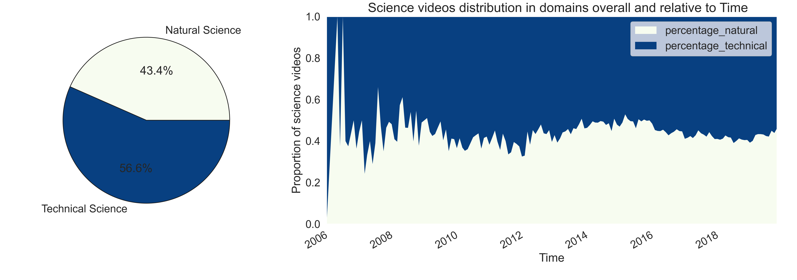

We are often put into boxes regarding our interests and hobbies, we have friends with the same interests as us, we chose a department when we are young at high school and social media makes a lot of suggestions based on our past interests. We sometimes hear that artistic and scientific people are different, closed-minded in their subject, and not interested in the other one. As an example, there exists a popular myth according to which "left-brained" people are more logical whereas "right-brained" people are more creative.
The goal of this project is to study this stereotype by studying the YouNiverse dataset at our disposition using comments and video metadata files. We want to determine whether users who usually comment on artistic videos also comment on scientific videos (and vice-versa). Our goal is also to split artistic and scientific videos into smaller domains to analyze if this effect is influenced by the particular domain of science/art in which the user is interested. To draw some conclusions about people’s interests, we can determine the user profiles and the watching/commenting behaviors w.r.t. videos that do not usually match their profiles.

Why should we care?
Why not
Research questions
- What type of art (visual, literary, performing) and sciences (technical, theoretical) are the most popular?
- How does this popularity evolve?
- Are commenters interested only in one area or are they engaged in both artistic and scientific videos?
- If commenters are interested in both, are they commenting at around the same time or in different phases (months, years)?
- Is there a difference of cross-interest between science and art when we study domains of these fields?
- What is the difference in terms of artistic sensibility between people interested in technical-related science vs people interested in natural sciences?
Data sampling
We are working with the YouNiverse dataset which is quite big (~111 GB). We want to classify videos into different domains for our analysis so we will need the metadata of the videos (13.5 GB file). And since we want to observe user commenting habits, we will need to address the dinosaur in the room: the 77.2 GB comments file as well.
Such great quantities of data can simply not be put into memory at once so we had to come up with a way of sampling that would allow us to simultaneously having a large enough sample and be able to match efficiently the user to the videos on which they commented.
Since we are studying youtube users, we choose to start the data sampling from them. What we do is recover a fixed number of comments, let's say around 12 million. In practice, we see that it corresponds to 619701 users.
Then we carry on to the videos where these users commented, and filter them from the whole video dataset. We assume that with enough users, we will have a large enough sample of videos to be representative of all the videos.
Our final sample is then composed of:
| Number of comments |
Number of users |
Number of videos |
| 11999998 |
619701 |
4136765 |
Note: We only ran this sampling pipeline once since it is quite long. It was made possible to process the whole video dataset with the help of dividing the data into processable chunks. We then saved the sampled data into two light-weight files using the feather format.
Data filtering
Artistic videos
Whenever someone publishes a video on Youtube, they must be assign it to one of the fifteen categories Youtube has predefined, namely:
- Autos & Vehicles
- Comedy
- Education
- Entertainment
- Film & Animation
- Gaming
- Howto & Style
- Music
- News & Politics
- Nonprofits & Activism
- Pets & Animals
- People & Blogs
- Science & Technology
- Sports
- Travel & Events
While the YouNiverse dataset does provide us with the category associated with each of the videos. Unfortunately for us, this categorization has many flaws which means we can not use it effectively whatsoever.
Sometimes videos have been randomly categorized by the publisher or another problem that can occur is that a video could fit into multiple categories but since there is only one slot possible, a choice must be made. There is no such thing as an “Arts” category either which means they will be spread out in the other categories. For the “Science” videos of our analysis, one could naively use the existing Science & Technology Youtube category, but this is not smart because as mentioned previously, scientific videos can technically be both scientific and educative for example which means they are also spread out.
Therefore we must filter out these artistic and scientific videos ourselves. In fact we only made use of the Youtube categorization only for a single aspect: Gaming videos is the dominating category in terms of number of videos but also caused us quite the problems for the filtering of our videos as we made use of tags. The issue is that since video games can be about pretty much any thematic, the tags can be so diverse and therefore include words one would not normally associate with video games, e.g. "craft" but would make it so that a lot of Minecraft videos would be classified as artistic which is not something we really want.
The YouNiverse dataset also contains the title, description and tags that were used in every video. These elements have more potential to be informative compared to the category. The filtering made use of the tags only since their goal is to be short and relevant to the content of the video while the title and description can be more ambiguous and vague. The filtering is made using keyword matching with a dictionary of words pertinent to wanted thematic. If one word is present in the tags, then the video and its content is considered as part of that particular theme.
For each of the artistic and scientific domains which are used in the analysis, a hand-crafted dictionary was created using the following approach:
- For a given domain, when thinking about it, a group of obvious words should come straight to mind, these will serve as the core set upon which the dictionary will be built.
- The dictionary can be augmented by using the core words as search queries in websites that provide either related terms or synonyms and hand-picking results that are relevant to the theme.
- GPT3 and ChatGPT were used to generate even more diverse sets of words relevant to the core words from which can be hand-picked from.
- Entertainment
- Film & Animation
Since exact keyword matching is being used, the words in the dictionary must be augmented, as in adding also the plural form or any other derivatives of it if they make sense, e.g. for choreographer, possible additions would be choreographies, choreographer, choreographers and so on.
Some keywords that could be obvious had to be excluded e.g. music in arts since a lot of people listen to music videos on YouTube without being interested in art.
Artistic videos
Defining art is not an easy task, it is a subjective concept and it constantly evolves with time. The boundaries of what is considered art are constantly being challenged and redefined as it can present itself under many shapes and forms. For the analysis, we settled on dividing arts into the following domains (inspired by the Wikipedia Arts page):
- Visual Art (e.g. architecture, drawing, painting, photography, sculpting)
- Literary Art (e.g. fiction, drama, poetry, and prose)
- Performing Art (e.g. dance, music, and theater)
Scientific videos
Similarly, science was also separated into two domains.
- The first would be Natural Sciences where the focus is on understanding the natural world and how it functions, e.g. biology, physics, chemistry.
- Technical Sciences, on the other hand, are disciplines that focus on the practical application of scientific knowledge and principles, e.g. engineering, computer science.
This distinction was made so that it can be possible to study if within scientific-minded people, there are subgroups that are more sensible to arts and whether it is related to their fields of interest in science.
Exploratory Data Analysis
General EDA on all videos
Exploratory Data Analysis (EDA) is an essential step in any data science project. It allows us to understand the characteristics and patterns of our data, identify any potential issues or biases, and formulate hypotheses for further analysis. By carefully examining the data through visualizations and summary statistics, we can gain insights that inform our decision-making and help us to effectively communicate our findings to others.

This first graph shows that the majority of YouTube videos fall into the entertainment category. This is not surprising, as entertainment is a broad category that includes a wide range of content such as music, movies, television shows, and more. It is likely that these types of videos are highly popular on YouTube, as they are easily consumable and can appeal to a wide audience. However, it is important to note that this graph only represents the youtube category field of the videos, and may not be representative of the overall distribution of video categories on YouTube. That’s why we decided to create our own category feature.
The following graph showing the proportion of science, art, and other types of videos over time indicates that art and science categories make up a significant portion of the data, with a combined total of 27%. This suggests that there is a sufficient amount of data to conduct an analysis on the relationship between commenting behavior on scientific and artistic videos. The graph also shows that there are slightly more artistic videos than scientific videos, and that the proportions of these categories do not fluctuate significantly over time. This suggests that the distribution of these categories is relatively stable and consistent, which may be useful for analyzing trends or patterns in the data.
The Venn diagram showing the overlap between artistic and scientific videos indicates that a significant portion of the videos in the dataset belongs to both categories. We decided to keep these videos in the dataset, as they accurately reflect the complexity and multifaceted nature of many YouTube videos.
Artistic videos
Since we have identified which videos fall under our vision of "Artistic videos", let's look at their distribution within the categories that Youtube has defined:
Most popular dictionary words that classified videos in their domains give us more information about what most popular type of video is actually located in each domain.
After examining the most common words in each of the subcategories, we found that some words were not specific enough to accurately classify the videos. For example, the word "music" could refer to a wide range of content, including both artistic and non-artistic videos. As a result, we decided to remove or replace these types of words from our dictionaries in order to increase the precision of our categorization process. Additionally, we noticed that some words were frequently used due to the presence of a large number of gaming videos in the dataset. For example, the word "craft" was commonly used in the titles and descriptions of Minecraft videos. In order to remove any potential biases introduced by these types of videos, we decided to remove gaming videos from the dataset.

The pie chart shows that the proportion of literary art, visual art, and performing art videos in the YouTube dataset is roughly equal and does not vary significantly over time. This indicates that the YouTube platform has a diverse range of artistic content, with a roughly equal distribution of different types of artistic expression. This is an interesting finding, as it suggests that users of the platform are interested in a wide range of artistic content, rather than just focusing on a single type of art.
In the Venn diagram representing the intersection between videos classified as literary art, visual art, and performing art, it is evident that there is a small portion of videos that fall into two subcategories. This is useful for the statistical analysis that will follow the EDA, as it allows for clear conclusions to be drawn about the characteristics of each subcategory. The small overlap between the subcategories means that the majority of the videos can be confidently classified into one specific subcategory, which will enable more accurate and reliable results in the statistical analysis.
Scientific videos
Similarly, we can look at the distribution within the Youtube categories for our "Science videos".
We can also analyse the most used words in the tags to classify our science videos. These can give us a more accurate impression of what tags our videos actually point towards.
For example, we can see that natural science videos are quite focused on astronomy and theoretical physics (universe, galaxy, stars). We also see a part in biology with words like (medical, cell, DNA). As a comparison, technical science is more focused on engineering and, well, technology in general.
We also wanted to observe the repartition of our classified science videos in the two different categories. We can see this in the following plot.

The pie chart shows us the distribution of the videos in general while the graph on the left shows us the evolution of the percentages with regard to the years. We can observe that we see in general a little more technical science videos on YouTube than natural science videos. While the proportion is almost equal, we could explain the larger amount of tech videos on youtube because of all the tech tutorials, technological product reviews and tests that is a quite popular trend on YouTube(article: https://shopping.google.com/m/21-of-21/articles/youtube-unboxing-videos/)
The quite important variations we see in the years before 2008 can be explained by the fact that there is fewer videos and so the graph is less smooth.
Here again, while there is still some overlap, the majority of the videos can be confidently classified into one specific subcategory, which will enable more accurate and reliable results in the statistical analysis.